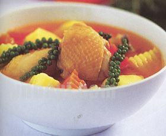

Cùng bắt tay làm thử thôi nào!
Nguyên liệu làm gà nấu tiêu
- 1 con gà khoảng 1,2-1,5 kg, bạn nên chọn loại gà kiến hay gà tam hoàng nấu sẽ ngon hơn.
- Tiêu xanh loại hột: 100g.
- Pa tê gan: 200g.
- Nước dừa xiêm: 200ml.
- Khoai tây: 200g;
- Khoai sọ: 200g;
- Cà rốt, cà chua: 1 củ.
- Ớt trái: 3 quả, hành lá, ngò.
- Bột năng: 50g;
- Gia vị: Tiêu, muối, đường, hạt nêm, bột ngọt, tỏi, ớt bột (hoặc bột điều nếu bạn không ăn cay), dầu ăn, nước tương.
- Bánh mì: 5 ổ (loại vừa).
Sơ chế nguyên liệu
- Tỏi: làm sạch, băm nhuyễn;
- Gà:
– Làm sạch, ngâm qua nước lạnh có pha muối 5 phút, để ráo, chặt miếng vừa ăn, bạn nên giữ nguyên một số bộ phận như đầu, cổ cánh để khi nấu xong trình bày món ăn cho đẹp mắt nhé.
– Ướp gà với 2 thìa hạt nêm, ½ thìa đường, 1 thìa bột ngọt, 1 thài tiêu, 1 thìa tỏi băm, 1 thìa dầu ăn để 30 phút.
- Pa tê gan: Phi thơm dầu ăn với ½ thìa tỏi, cho pa tê gan vào xào chín, để riêng.
- Tiêu: Nhặt bỏ hạt sâu, để nguyên cọng và trái.
- Pa tê gan: tán nhuyễn.
- Khoai tây, cà rốt, khoai sọ: Gọt vỏ, tỉa hoa theo ý thích của bạn nhé rồi luộc sơ qua với nước sôi có thêm chút muối, dội qua nước lạnh, để ráo.
- Cà chua: Gọt viền vỏ, xếp lại vòng tròn giống hoa hồng.
- Ớt trái: 1 trái tỉa hoa, 2 trái thái lát.
- Hành lá, ngò: nhặt sạch, thái mịn hành lá, để nguyên ngò để trang trí.
- Bột năng: Hòa tan với 2 thìa nước lạnh.
- Bánh mì: Thái khoanh tròn.
- Trộn ớt trái thái lát với 3 thìa nước tương để ăn kèm.
Thực hiện món gà nấu tiêu
- Phi thơm dầu ăn với tỏi, cho thêm ½ thìa ớt bột (hoặc bột điều) để tạo màu cho món ăn;
- Cho gà vào xào cho thật săn;
- Khi gà vừa chín, cho 200ml nước dừa xiêm, 500ml nước lạnh vào;
- Nước vừa sôi, bạn cho khoai tây, cà rốt, khoai sọ vào hầm chín cùng với gà;
- Cuối cùng bạn cho pa tê gan đã xào chín và tiêu sọ vào nồi hầm;
- Nêm thêm một ít gia vị cho vừa ăn theo khẩu vị cả gia đình, cho bột năng đã hòa với nước lạnh vào để món gà hầm tiêu xanh có độ sền sệt, đun thêm khoảng 5 phút là được rồi đấy;
- Tắt bếp, rắc hành lá đã thái mịn và ½ thìa tiêu lên trên để tạo mùi thơm cho món ăn.
Yêu cầu món gà nấu tiêu
- Món gà hầm tiêu có vị vừa ăn, phối màu đẹp mắt;
- Gà vừa chín, không dai, không bở, ngấm đều gia vị;
- Cà rốt, khoai tây, khoai sọ giữ nguyên hình dáng ban đầu, không bị bở ra;
- Khi ăn bạn sẽ cảm nhận được vị ngon của thịt gà, vị béo của pa tê, vị ngọt thanh của nước dừa, vị thơm cay của tiêu sọ tất cả hòa quyện vào nhau thành một hương vị rất đặc trưng và hấp dẫn.
Trình bày món ăn và cách ăn
- Bạn xếp gà ra đĩa như dáng gà đang nằm, chế nước xốt gà vào;
- Cho khoai tây, khoai sọ, cà rốt xếp chung quanh cùng với tiê; ở giữa cắm cà chua, ớt tỉa hoa; rắc một ít tiêu và ngò rí lên trên để món ăn thêm phàn hấp dẫn, đẹp mắt;
- Xếp đĩa gà ra bàn cùng với bánh mì thái lát và nước tương đã chuẩn bị sẵn ở trên;
- Ăn kèm gà hầm tiêu xanh với bánh mì và một chút xíu nước tương cho thêm phần đậm đà nhé, bạn nên ăn nóng ngay sau khi nấu xong mới đảm bảo độ ngon của món ăn đấy.
Với hướng dẫn làm món gà nấu tiêu thơm ngon trên đây sẽ là sự lựa chọn tuyệt vời cho những buổi gặp mặt cuối tuần hay những bữa tiệc nhỏ của gia đình đấy. Chúc bạn chế biến thành công nhé.